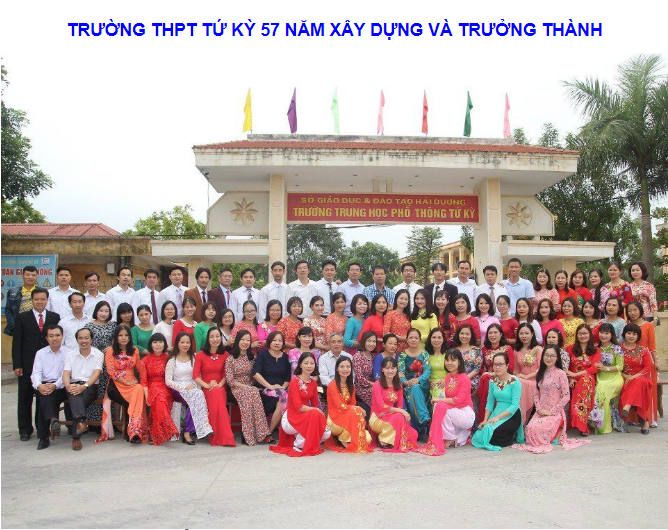

Giới thiệu

Tập thể cán bộ, công nhân viên trường THPT Tứ Kỳ
Trường cấp III Tứ Kỳ năm xưa (nay là trường THPT Tứ Kỳ) được thành lập từ năm 1963. Trường được xây dựng trên địa điểm thôn La Tỉnh xã Tây Kỳ (nay là Thị trấn Tứ Kỳ, huyện Tứ Kỳ, tỉnh Hải Dương).
Trên chặng đường dài 50 năm xây dựng và trưởng thành, trường THPT Tứ Kỳ luôn khắc phục mọi khó khăn, giương cao ngọn cờ thi đua “Hai tốt”, không ngừng phấn đấu để vươn tới những tầm cao mới, đóng góp cho sự nghiệp xây dựng và bảo vệ Tổ Quốc. Trong 50 năm qua, trường THPT Tứ Kỳ trở thành cái nôi nâng cao dân trí; đào tạo nhân lực; bồi dưỡng nhân tài cho quê hương đất nước - nguồn tài nguyên trí tuệ vô tận của đất nước.
Năm đầu thành lập, trường có 14 giáo viên với 5 lớp và 290 học sinh. Sau hơn một tháng thành lập, trường đã xây dựng được 2 dãy nhà cấp 4 làm phòng học, một nhà làm phòng làm việc cho cán bộ, giáo viên.
Sau hơn một năm thành lập, tháng 8- 1964, giặc Mỹ leo thang bắn phá Miền Bắc. Cả nước thành chiến trường, để đảm bảo an toàn, trường phải sơ tán về học tại xã Quang Phục. Cuộc chiến tranh phá hoại bằng không quân Mỹ ngày càng ác liệt, trường phải tách thành hai phân hiệu học tại hai địa điểm. Trường cấp 3 Tứ Kỳ A học tại xã Văn Tố, trường cấp 3 Tứ Kỳ B học tại xã Tái Sơn. Những ngày tháng của cuộc chiến tranh chống Mỹ ác liệt là những ngày tháng không thể nào quên. Học sinh phải đi học, đi bộ xa hàng chục km, đầu đội mũ rơm, lưng đeo nùm rơm để tránh bom đạn Mỹ.
Xung quanh nhà học là những đường giao thông hào, nối với các hầm kèo nhà và hố cá nhân để trú ẩn khi có máy bay Mỹ đến ném bom. Những ngày tháng chiến tranh ác liệt, tuy vất vả, gian nan nhưng nhiều kỷ niệm, không mấy buổi học được bình yên. Khi tiếng kẻng báo động vang lên, học trò theo hướng dẫn của thầy cô lao ra hầm trú ẩn, dứt tiếng bom, các lớp lại tiếp tục học bình thường. Trong những ngày tháng gian nan ấy, tinh thần học tập của trường vẫn luôn đặt lên hàng đầu. Năm 1965, 1966, hai lớp chuyên Toán của tỉnh Hải Dương được đặt tại cơ sở trường. Những năm tháng chống Mỹ ác liệt ấy, hàng nghìn thầy và trò đã xếp bút nghiên lên đường “xẻ dọc Trường Sơn đi cứu nước”, nhiều người đã anh dũng hy sinh, không ít người đã để lại một phần thân thể trên khắp các mặt trận cả nước.
Để đáp ứng yêu cầu xây dựng trường chuẩn quốc gia, được sự quan tâm của UBND tỉnh, Sở GD-ĐT Hải Dương và Huyện ủy, UBND huyện Tứ Kỳ; trường THPT Tứ Kỳ được cấp đất ra xây dựng tại khu mới với diện tích 35.000m2. Đến nay trường đã xây dựng được 36 phòng học thường, 10 phòng học bộ môn và một nhà hiệu bộ 3 tầng cho cán bộ, giáo viên làm việc. Tất cả các phòng học, phòng làm việc đều được trang bị khá đầy đủ phục vụ tốt cho việc dạy và học nâng cao chất lượng toàn diện.